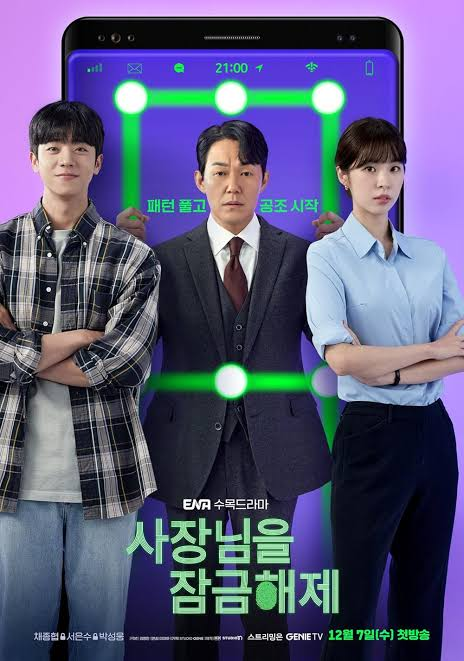
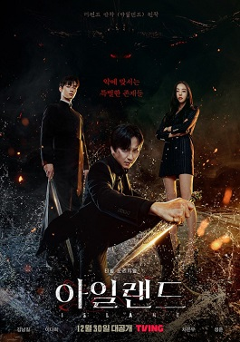
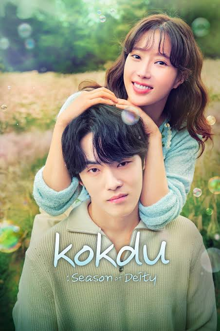
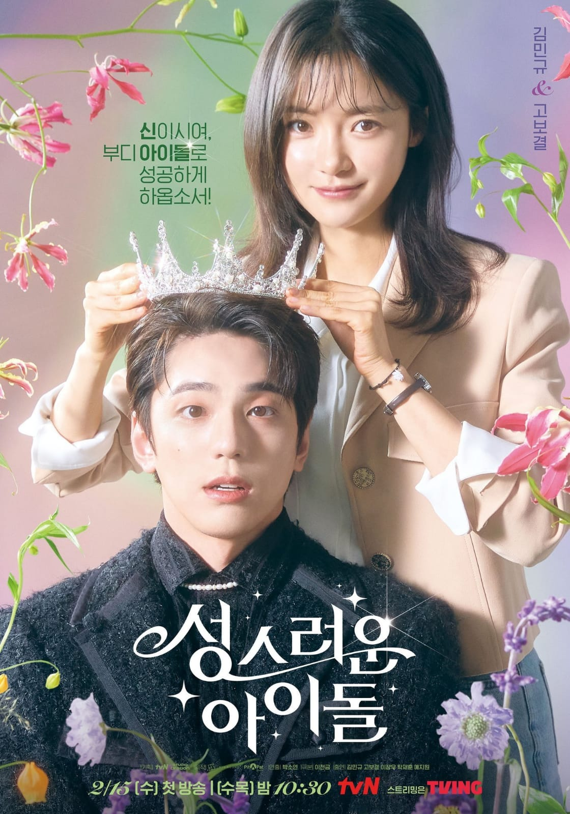
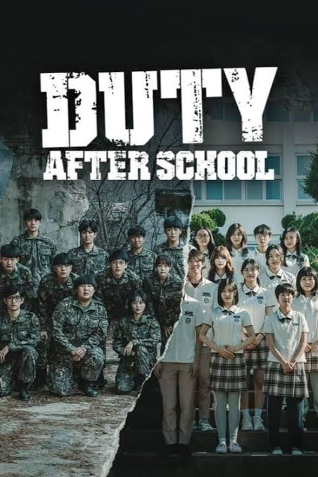

Las mejores series de fantasia coreanas de los últimos años
1. Unlock My Boss.
2. The Forbidden Marriage.
3. Island
4. Kokdu: Season of Deity.
5. The Heavenly Idol.
6. Delivery Man.
7. Duty After School.
8. My Perfect Stranger.

1. Unlock My Boss.
2. The Forbidden Marriage.
3. Island
4. Kokdu: Season of Deity.
5. The Heavenly Idol.
6. Delivery Man.
7. Duty After School.
8. My Perfect Stranger.
describe la historia de Park In Sung (Chae Jong Hyeop), un desempleado que busca empleo cuya vida cambia después de tomar un teléfono inteligente que dice ser el CEO de una gran corporación de IT cuya alma quedó atrapada dentro del teléfono inteligente después de un incidente.

trata sobre el rey Yi Heon (Kim Young Dae), quien cae profundamente en la desesperación después de la muerte de su esposa (Kim Min Ju). Siete años después, se encuentra con una estafadora llamada So Rang (Park Ju Hyun) que afirma que puede ser poseída por el espíritu de la difunta princesa.
Basado en un exitoso webtoon, “Island” es un drama de exorcismo de fantasía que tiene lugar en la isla de Jeju. Representa el doloroso y extraño viaje de los personajes que están cansados de luchar contra el mal que intenta destruir el mundo.


Basado en un popular webtoon y novela web, “The Heavenly Idol” es un drama de fantasía sobre el Sumo Sacerdote Rembrary (Kim Min Kyu) quien de repente se despierta un día y se encuentra en el cuerpo de Woo Yeon Woo, el “centro visual” del fracasado grupo ídolo Wild Animal.

cuenta la historia de Seo Young Min (Yoon Chan Young), un taxista que solo lleva a fantasmas, y Kang Ji Hyun (Minah), un fantasma que sufre pérdida de memoria, mientras trabajan juntos para resolver el crimen.
cuenta la historia de estudiantes de secundaria que son llamados a unirse a la primera guerra del mundo contra fuerzas extraterrestres. Cuando misteriosas esferas alienígenas comienzan a invadir, el Departamento de Defensa ofrece incentivos de admisión a la universidad para que los estudiantes se inscriban en las fuerzas reservadas.
